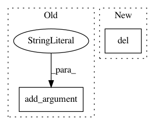

da9d81ea78164ca729875d7c8438667cb371d3cd,examples/transformer/hyperparams.py,,load_hyperparams,#,9
Before Change
argparser.add_argument("--wbatchsize", type=int, default=3000)
argparser.add_argument("--epoch", type=int, default=40)
argparser.add_argument("--start_epoch", type=int, default=0)
argparser.add_argument("--max_seq_length", type=int, default=256)
argparser.add_argument("--mode", type=str,
default="train_and_evaluate",
help="can also be test mode")
argparser.add_argument("--src_language", type=str, default="en")
After Change
}
decoder_hparams = copy.deepcopy(encoder_hparams)
del decoder_hparams["bos_pad"]
del decoder_hparams["zero_pad"]
decoder_hparams["share_embed_and_transform"] = True
decoder_hparams["transform_with_bias"] = args.affine_bias
decoder_hparams["maximum_decode_length"] = args.max_decode_len
decoder_hparams["beam_width"] = args.beam_width
In pattern: SUPERPATTERN
Frequency: 3
Non-data size: 2
Instances
Project Name: asyml/texar
Commit Name: da9d81ea78164ca729875d7c8438667cb371d3cd
Time: 2018-08-21
Author: shore@pku.edu.cn
File Name: examples/transformer/hyperparams.py
Class Name:
Method Name: load_hyperparams
Project Name: GoogleCloudPlatform/cloudml-samples
Commit Name: d9651881be87a8442e7c2763731bcd2a60dcdb64
Time: 2017-06-22
Author: elibixby@google.com
File Name: census/tensorflowcore/trainer/task.py
Class Name:
Method Name:
Project Name: ilastik/ilastik
Commit Name: 9418883d418ecccd7fe5da4dddffdc01064efb23
Time: 2014-03-26
Author: bergs@janelia.hhmi.org
File Name: ilastik/workflows/carving/splitBodyCarvingWorkflow.py
Class Name: SplitBodyCarvingWorkflow
Method Name: __init__